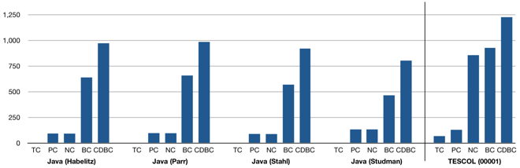
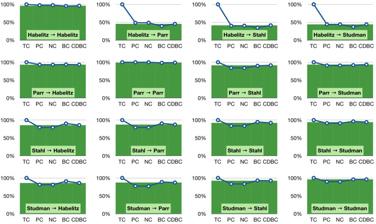
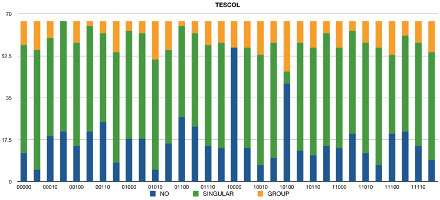

Software Language Processing Suite
Comparison of context-free grammars based on parsing generated test data
[page under construction]

Test set generation
mindepthG, distG, complete, hole, mark, vary
(Prolog)
skipuppy, tc, pc, nc, bc, cdbc, main gbtf
(Prolog)
ANTLR⇒BGF extraction
ANTLR2 grammar
(Rascal)
ANTLR3 grammar
(Rascal)
ANTLR stripping transformation
(±legacy Python)
ANTLR pretty-printer
(Python)
Stripped ANTLR specification and its mapping to BGF
(ANTLR3)

ANTLR Java 5 sources
Habelitz
Original grammar by Dieter Habelitz
(ANTLR3), 2008
Extraction directory
Extracted grammar
(BGF)
Extracted grammar
(browsable)
Parr
Original grammar by Terence Parr
(ANTLR3), 2006
Extraction directory
Extracted grammar
(BGF)
Extracted grammar
(browsable)
Stahl
Original grammar by Michael Stahl
(ANTLR2), 2004
Extraction directory
Extracted grammar
(BGF)
Extracted grammar
(browsable)
Studman
Original grammar by Michael Studman
(ANTLR2), 2004
Extraction directory
Extracted grammar
(BGF)
Extracted grammar
(browsable)

TESCOL sources
00000 grammar
(browsable)
00001 grammar
(browsable)
00010 grammar
(browsable)
00011 grammar
(browsable)
00100 grammar
(browsable)
00101 grammar
(browsable)
00110 grammar
(browsable)
00111 grammar
(browsable)
01000 grammar
(browsable)
01001 grammar
(browsable)
01010 grammar
(browsable)
01011 grammar
(browsable)
01100 grammar
(browsable)
01101 grammar
(browsable)
01110 grammar
(browsable)
01111 grammar
(browsable)
10000 grammar
(browsable)
10001 grammar
(browsable)
10010 grammar
(browsable)
10011 grammar
(browsable)
10100 grammar
(browsable)
10101 grammar
(browsable)
10110 grammar
(browsable)
10111 grammar
(browsable)
11000 grammar
(browsable)
11001 grammar
(browsable)
11010 grammar
(browsable)
11011 grammar
(browsable)
11100 grammar
(browsable)
11101 grammar
(browsable)
11110 grammar
(browsable)
11111 grammar
(browsable)
TESCOL.g
(reference grammar)
Paper
...
The page is maintained by
Dr. Vadim Zaytsev
a.k.a. @
grammarware
. Last updated: April 2011.